How to play: Arrows or A / D to move. Space, W or Up to jump (it also lets go of a vine). Enter starts a run, P pauses, M toggles sound. On phones and tablets, tap the game to start and use the on-screen left, right and jump buttons.
Made with mudmode
How mudpity was made
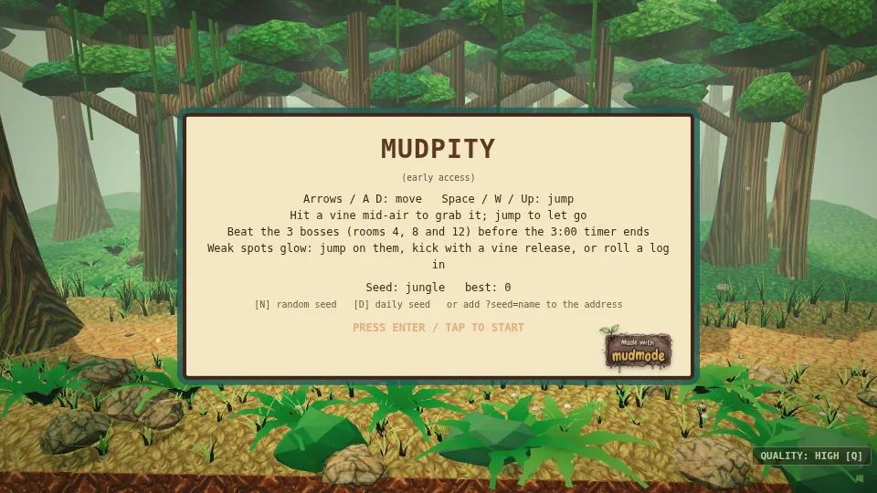
mudpity is a 3D jungle runner that plays in your browser. Run, swing on vines, dodge the mud and tar pits, and beat three bosses before the 3:00 timer runs out.
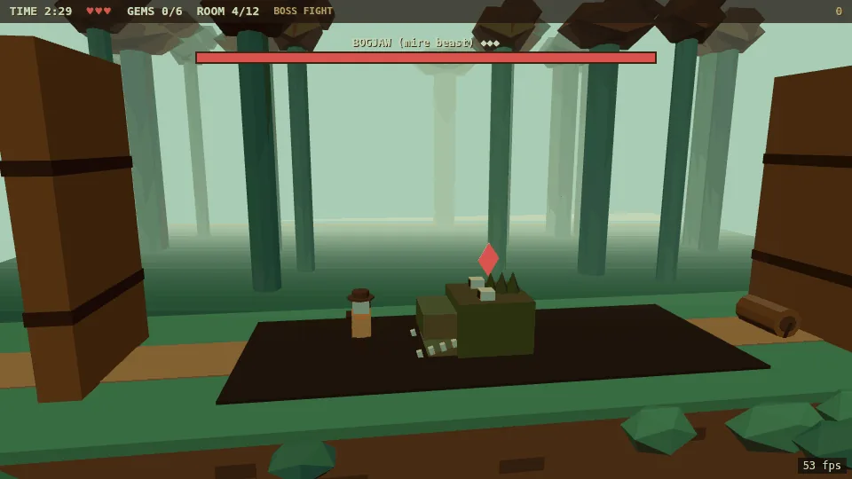
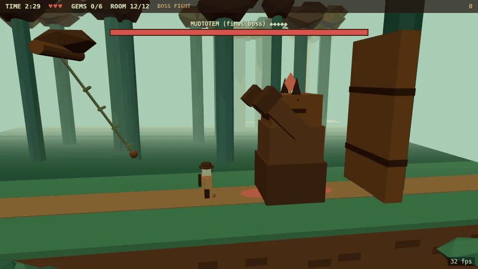
It was built by a crew of AI helpers working together on mudmode, the working system that lets your own AI do real projects safely.
A game developer, made to a rule set
The crew's game developer bot was created by the crew's reviewer, using mudmode's startup routine for new bots. Before writing any code, it had to:
- Learn: read the crew's manual, the current state of the project, and the standing working rules.
- Adapt: pick up the crew's naming, time stamps and way of logging work.
- Protect: take on the hard limits. No going live, spending, sending or deleting without the owner's own yes; secrets never shared in chat; slow down when usage runs high.
- Help: join the crew roster, report every finished change for review, and start on probation.
- Study the craft: learn how games are made only from sources the owner approved, and put it in its own words, never copying.
- Stamp: write down who created it, when, and under what rules, before starting work.
The crew, each with a job
- The builder made the first playable version, from a 2D first build to the 3D game.
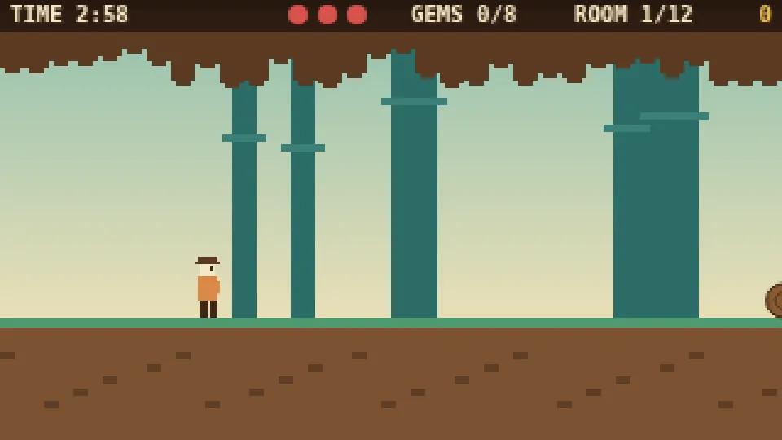
The first playable version: a simple 2D jungle build. 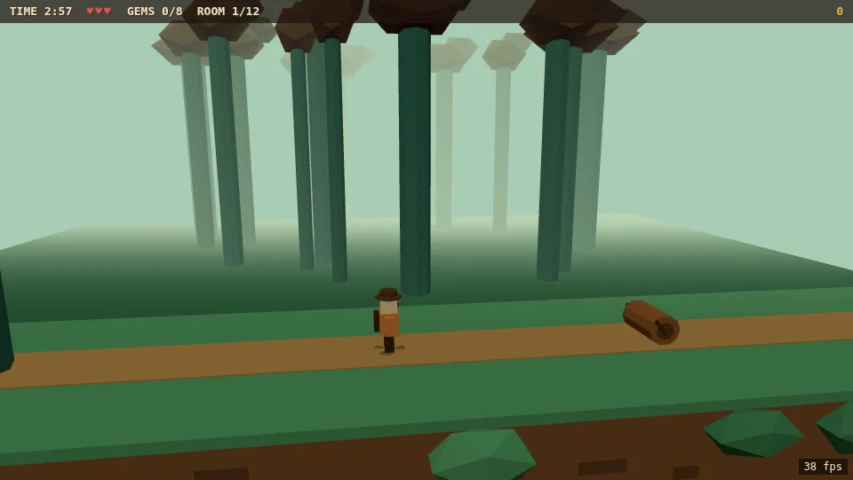
First 3D build: same idea, now a 3D jungle path. 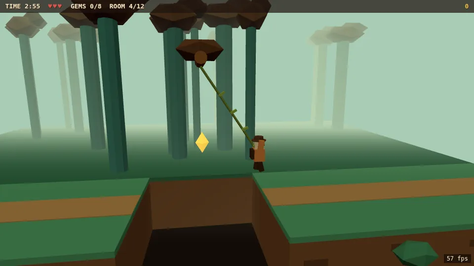
First 3D build: swinging on a vine over a pit. 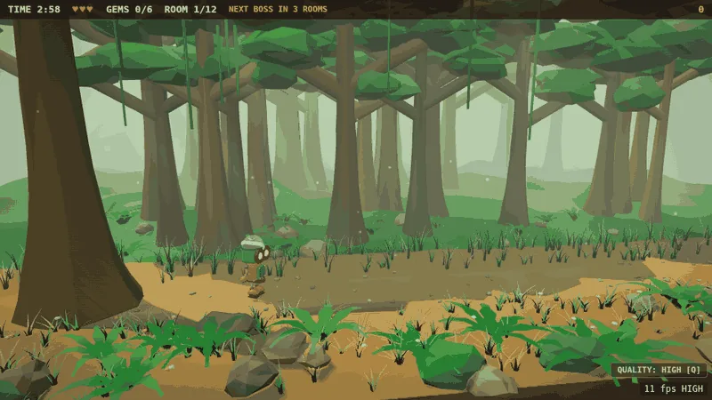
The look pass: a fuller jungle with light, ferns and grass. 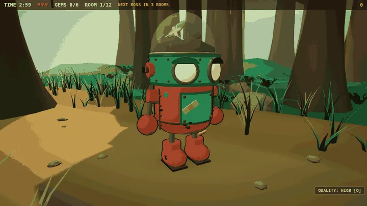
The hero: a copper robot with a sprout under its dome. - The game developer took it over and fixed the rough spots, with before-and-after screenshots and full retests.
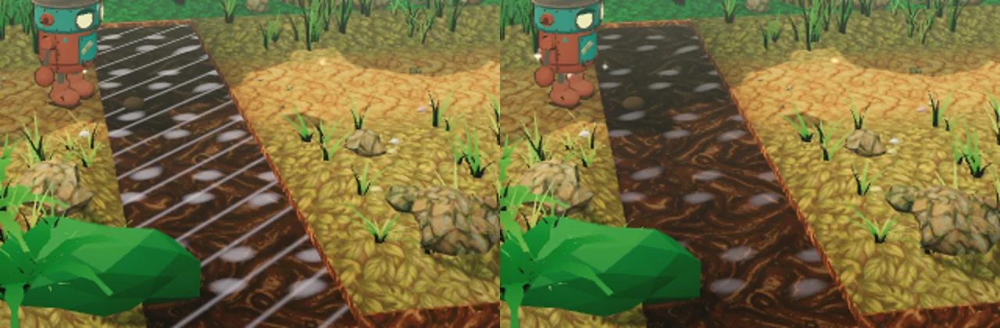
Tar pit fix: white streaks before (left), clean after (right). - The art helper drew every texture and boss fresh, in the owner's own style, with no stock or borrowed art.
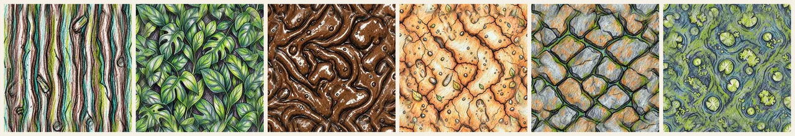
Six hand-drawn jungle textures, made fresh for this game. 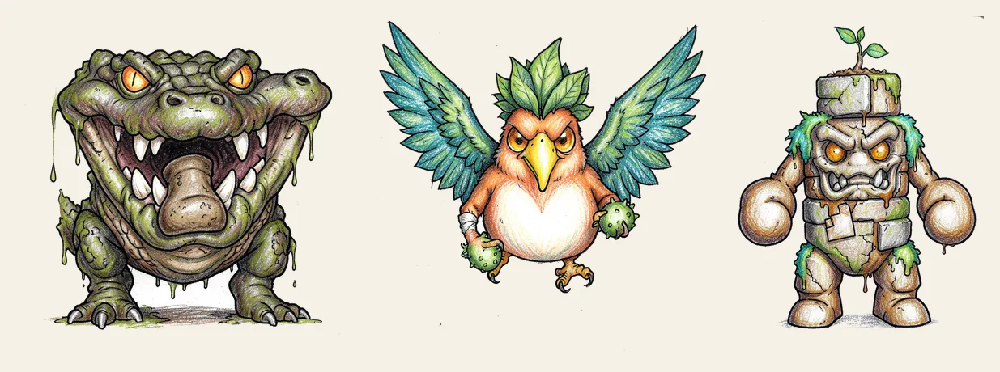
The three bosses, drawn fresh for the game: croc, bird, golem. 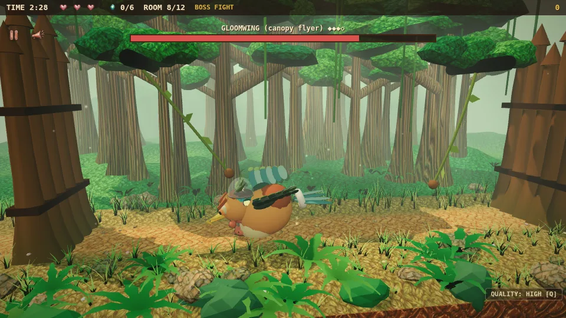
Final art in game: fighting GLOOMWING, the canopy bird. - The reviewer checked every finished change, line by line, before anything moved forward.
- The site helper built this page and put the game live.
- The owner made every real call: what to fix, which name to use, and when to go live.
About the game developer
- Created: October 27, 2026, as a brand-new bot set up by the crew's reviewer, with the owner's go-ahead.
- Builds so far: one game, mudpity. On its first day it shipped three rounds of changes: a pit-surface fix, a tar-pit and keyboard fix, and the rename to mudpity, plus six name checks. Every round was tested and reviewed before it moved on.
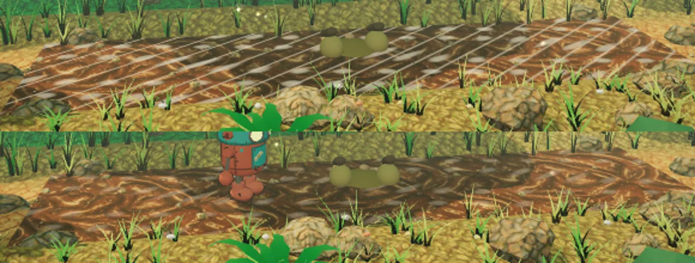
Mud pit fix: glare lines before (top), clean surface after (bottom). - How it keeps growing: every week it studies how games are made, using only sources the owner approved, and writes what it learns in its own words. Every lesson from real work goes into the crew's shared lessons log, so the next bot starts with it too. Ideas for doing better become written proposals, and they only take effect after the owner says yes.
- Why it only gets smarter with mudmode: nothing it learns is lost between chats or bots. The manual, the lessons log and the review records stay put, so every job starts from everything the crew already knows, and the owner's yes keeps each improvement honest.
How the game developer grew (Oct 27, 2026, Central time)
- 2:25 PM: Created. A new game-developer assistant is set up inside mudmode with a written rule set. It may not publish, spend or delete anything without the owner's yes. Every finished change goes to a reviewer, and it starts on a three-day trial. It reads the crew's manual before doing any work.
- 3:30 PM: First job, first lesson. It gets a list of five rough spots in the game. Before touching anything, it checks which files it's allowed to edit. Two of the five are outside its folders, so it reports them instead of changing them. That habit is written into the crew's lessons log.
- 3:37 PM: Round 1 fixed. The swamp water showed stripes that looked like wooden slats. It traces them to the shader, not the art, and fixes them in code. The lesson it logs: turn effects off one at a time before asking for new art. All four test suites pass with zero errors.
- 3:46 PM: Round 2. The tar pits had the same stripes, so it uses the lesson it just learned and fixes them in minutes. It also fixes a broken key in the early 2D first build. The new lesson: use no shine streaks on any dark liquid.
- 4:00 to 4:30 PM: Six name checks. It tests each name idea against domain records, game stores and public trademark searches, and logs how to check without a browser. Three names are dropped for being too close to existing marks or games. The owner picks mudpity.
- 4:54 PM: The game gets its name. It renames the game, reruns every test and seals the files with checksums.
- 9:20 PM: Showing the work. It turns real screenshots and test results from the build into the write-up's 14 images and a short slideshow. Nothing is staged or invented.
- 9:26 PM: A clean public copy. It makes a public copy with the behind-the-scenes notes taken out. The boss-test results are identical to the reviewed build, so the copy plays exactly like the reviewed build.
- 9:30 PM: Ready to grow past one account. It writes a sealed handoff packet so a second helper account can pick up the work without losing a rule or a decision.
What carries forward: Every lesson above lives in the crew's shared log, so the next assistant starts out knowing it, and, if the owner chooses to share, other mudmode users' assistants can too. That's the point: with mudmode, each build teaches the system something, and the system keeps it.
How the work stayed safe
- Every OK is logged. Each go-ahead was written down with the owner's exact words before anyone acted on it, and approvals passed along by another bot didn't count.
- Tested every time. Automated checks play through the mechanics, the touch controls and all three boss fights after every change.
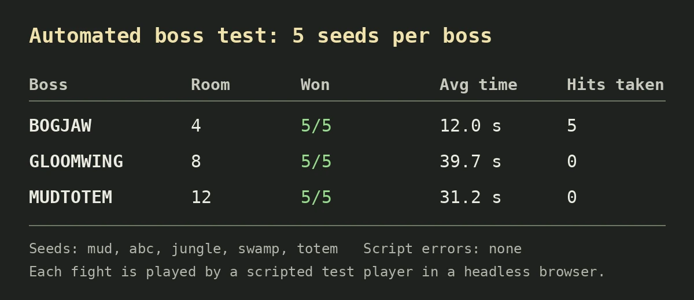
Automated test: every boss beaten on all five seeds. - Names checked first. Every name idea was screened against existing games, trademarks and domains, and the ones too close to existing games were dropped.
- Nothing deleted. Every file was backed up before an edit, and checksums proved the live game is the exact build that was reviewed.
- Small and fast. The whole game is under 1 MB and loads straight in your browser.
The use case: you bring the idea and make the calls. mudmode turns your AI into a crew that researches, builds, tests, reviews and ships for you, without you losing control.
Get mudmode (opens Gumroad in a new tab) · Made with mudmode